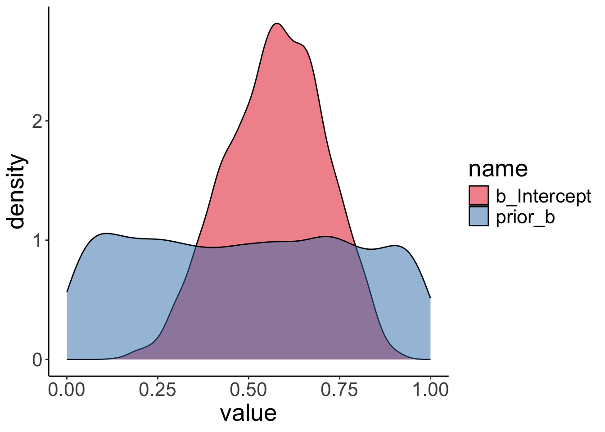
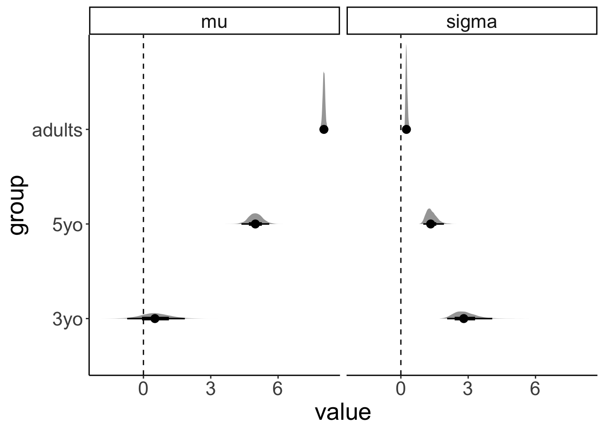

Chapter 24 Bayesian data analysis 3
24.1 Learning goals
- Evidence for null results.
- Only positive predictors.
- Dealing with unequal variance.
- Modeling slider data: Zero-one inflated beta binomial model.
- Modeling Likert scale data: Ordinal logistic regression.
24.2 Load packages and set plotting theme
library("knitr") # for knitting RMarkdown
library("kableExtra") # for making nice tables
library("janitor") # for cleaning column names
library("tidybayes") # tidying up results from Bayesian models
library("brms") # Bayesian regression models with Stan
library("patchwork") # for making figure panels
library("GGally") # for pairs plot
library("broom.mixed") # for tidy lmer results
library("bayesplot") # for visualization of Bayesian model fits
library("modelr") # for modeling functions
library("lme4") # for linear mixed effects models
library("afex") # for ANOVAs
library("car") # for ANOVAs
library("emmeans") # for linear contrasts
library("ggeffects") # for help with logistic regressions
library("titanic") # titanic dataset
library("gganimate") # for animations
library("parameters") # for getting parameters
library("transformr") # for gganimate
library("rstanarm") # for Bayesian models
library("ggrepel") # for labels in ggplots
library("scales") # for percent y-axis
library("tidyverse") # for wrangling, plotting, etc. 24.3 Evidence for the null hypothesis
See this tutorial and this paper (Wagenmakers et al. 2010) for more information.
24.3.1 Bayes factor
24.3.1.1 Fit the model
- Define a binomial model
- Give a uniform prior
beta(1, 1) - Get samples from the prior
24.3.1.2 Visualize the results
Visualize the prior and posterior samples:
fit.brm_bayes %>%
as_draws_df(variable = "[b]",
regex = T) %>%
pivot_longer(cols = -contains(".")) %>%
ggplot(mapping = aes(x = value,
fill = name)) +
geom_density(alpha = 0.5) +
scale_fill_brewer(palette = "Set1")
# A draws_df: 1000 iterations, 4 chains, and 2 variables
b_Intercept prior_b
1 0.54 0.480
2 0.49 0.320
3 0.59 0.123
4 0.59 0.567
5 0.66 0.112
6 0.45 0.113
7 0.79 0.828
8 0.63 0.019
9 0.39 0.014
10 0.56 0.602
# ... with 3990 more draws
# ... hidden reserved variables {'.chain', '.iteration', '.draw'}We test the H0: \(\theta = 0.5\) versus the H1: \(\theta \neq 0.5\) using the Savage-Dickey Method, according to which we can compute the Bayes factor like so:
\(BF_{01} = \frac{p(D|H_0)}{p(D|H_1)} = \frac{p(\theta = 0.5|D, H_1)}{p(\theta = 0.5|H_1)}\)
Hypothesis Tests for class b:
Hypothesis Estimate Est.Error CI.Lower CI.Upper Evid.Ratio
1 (Intercept)-(0.5) = 0 0.07 0.14 -0.2 0.32 2.22
Post.Prob Star
1 0.69
---
'CI': 90%-CI for one-sided and 95%-CI for two-sided hypotheses.
'*': For one-sided hypotheses, the posterior probability exceeds 95%;
for two-sided hypotheses, the value tested against lies outside the 95%-CI.
Posterior probabilities of point hypotheses assume equal prior probabilities.The result shows that the evidence ratio is in favor of the H0 with \(BF_{01} = 2.22\). This means that H0 is 2.2 more likely than H1 given the data.
24.3.2 LOO
Another way to test different models is to compare them via approximate leave-one-out cross-validation.
set.seed(1)
df.loo = tibble(x = rnorm(n = 50),
y = rnorm(n = 50))
# visualize
ggplot(data = df.loo,
mapping = aes(x = x,
y = y)) +
geom_point()
# fit the frequentist model
fit.lm_loo = lm(formula = y ~ 1 + x,
data = df.loo)
fit.lm_loo %>%
summary()
Call:
lm(formula = y ~ 1 + x, data = df.loo)
Residuals:
Min 1Q Median 3Q Max
-1.92760 -0.66898 -0.00225 0.48768 2.34858
Coefficients:
Estimate Std. Error t value Pr(>|t|)
(Intercept) 0.12190 0.13935 0.875 0.386
x -0.04555 0.16807 -0.271 0.788
Residual standard error: 0.9781 on 48 degrees of freedom
Multiple R-squared: 0.001528, Adjusted R-squared: -0.01927
F-statistic: 0.07345 on 1 and 48 DF, p-value: 0.7875# fit and compare bayesian models
fit.brm_loo1 = brm(formula = y ~ 1,
data = df.loo,
seed = 1,
file = "cache/brm_loo1")
fit.brm_loo2 = brm(formula = y ~ 1 + x,
data = df.loo,
seed = 1,
file = "cache/brm_loo2")
fit.brm_loo1 = add_criterion(fit.brm_loo1,
criterion = "loo",
file = "cache/brm_loo1")
fit.brm_loo2 = add_criterion(fit.brm_loo2,
criterion = "loo",
file = "cache/brm_loo2")
loo_compare(fit.brm_loo1, fit.brm_loo2) elpd_diff se_diff
fit.brm_loo1 0.0 0.0
fit.brm_loo2 -1.2 0.5 fit.brm_loo1 fit.brm_loo2
9.999990e-01 9.536955e-07 
24.4 Dealing with heteroscedasticity
Let’s generate some fake developmental data where the variance in the data is greatest for young children, smaller for older children, and even smaller for adults:
# make example reproducible
set.seed(1)
df.variance = tibble(group = rep(c("3yo", "5yo", "adults"), each = 20),
response = rnorm(n = 60,
mean = rep(c(0, 5, 8), each = 20),
sd = rep(c(3, 1.5, 0.3), each = 20)))24.4.1 Visualize the data
df.variance %>%
ggplot(aes(x = group, y = response)) +
geom_jitter(height = 0,
width = 0.1,
alpha = 0.7)
24.4.2 Frequentist analysis
24.4.2.1 Fit the model
fit.lm_variance = lm(formula = response ~ 1 + group,
data = df.variance)
fit.lm_variance %>%
summary()
Call:
lm(formula = response ~ 1 + group, data = df.variance)
Residuals:
Min 1Q Median 3Q Max
-7.2157 -0.3613 0.0200 0.7001 4.2143
Coefficients:
Estimate Std. Error t value Pr(>|t|)
(Intercept) 0.5716 0.3931 1.454 0.151
group5yo 4.4187 0.5560 7.948 8.4e-11 ***
groupadults 7.4701 0.5560 13.436 < 2e-16 ***
---
Signif. codes: 0 '***' 0.001 '**' 0.01 '*' 0.05 '.' 0.1 ' ' 1
Residual standard error: 1.758 on 57 degrees of freedom
Multiple R-squared: 0.762, Adjusted R-squared: 0.7537
F-statistic: 91.27 on 2 and 57 DF, p-value: < 2.2e-16# A tibble: 1 × 12
r.squared adj.r.squared sigma statistic p.value df logLik AIC BIC
<dbl> <dbl> <dbl> <dbl> <dbl> <dbl> <dbl> <dbl> <dbl>
1 0.762 0.754 1.76 91.3 1.70e-18 2 -117. 243. 251.
# ℹ 3 more variables: deviance <dbl>, df.residual <int>, nobs <int>
24.4.3 Bayesian analysis
While frequentist models (such as a linear regression) assume equality of variance, Bayesian models afford us with the flexibility of inferring both the parameter estimates of the groups (i.e. the means and differences between the means), as well as the variances.
24.4.3.1 Fit the model
We define a multivariate model which tries to fit both the response as well as the variance sigma:
fit.brm_variance = brm(formula = bf(response ~ group,
sigma ~ group),
data = df.variance,
file = "cache/brm_variance",
seed = 1)
summary(fit.brm_variance) Family: gaussian
Links: mu = identity; sigma = log
Formula: response ~ group
sigma ~ group
Data: df.variance (Number of observations: 60)
Draws: 4 chains, each with iter = 2000; warmup = 1000; thin = 1;
total post-warmup draws = 4000
Population-Level Effects:
Estimate Est.Error l-95% CI u-95% CI Rhat Bulk_ESS Tail_ESS
Intercept 0.53 0.65 -0.72 1.84 1.00 1250 1764
sigma_Intercept 1.04 0.17 0.72 1.40 1.00 1937 2184
group5yo 4.46 0.73 2.96 5.88 1.00 1505 1877
groupadults 7.51 0.65 6.18 8.79 1.00 1251 1765
sigma_group5yo -0.74 0.24 -1.23 -0.26 1.00 2111 2195
sigma_groupadults -2.42 0.23 -2.88 -1.96 1.00 2139 2244
Draws were sampled using sampling(NUTS). For each parameter, Bulk_ESS
and Tail_ESS are effective sample size measures, and Rhat is the potential
scale reduction factor on split chains (at convergence, Rhat = 1).Notice that sigma is on the log scale. To get the standard deviations, we have to exponentiate the predictors, like so:
fit.brm_variance %>%
tidy(parameters = "^b_") %>%
filter(str_detect(term, "sigma")) %>%
select(term, estimate) %>%
mutate(term = str_remove(term, "b_sigma_")) %>%
pivot_wider(names_from = term,
values_from = estimate) %>%
clean_names() %>%
mutate(across(-intercept, ~ exp(. + intercept))) %>%
mutate(intercept = exp(intercept))Warning in tidy.brmsfit(., parameters = "^b_"): some parameter names contain
underscores: term naming may be unreliable!# A tibble: 1 × 3
intercept group5yo groupadults
<dbl> <dbl> <dbl>
1 2.82 1.34 0.25024.4.3.2 Visualize the model predictions
df.variance %>%
expand(group) %>%
add_epred_draws(object = fit.brm_variance,
dpar = TRUE ) %>%
select(group,
.row,
.draw,
posterior = .epred,
mu,
sigma) %>%
pivot_longer(cols = c(mu, sigma),
names_to = "index",
values_to = "value") %>%
ggplot(aes(x = value, y = group)) +
stat_halfeye() +
geom_vline(xintercept = 0,
linetype = "dashed") +
facet_grid(cols = vars(index))
This plot shows what the posterior looks like for both mu (the inferred means), and for sigma (the inferred variances) for the different groups.
set.seed(1)
df.variance %>%
add_predicted_draws(object = fit.brm_variance,
ndraws = 1) %>%
ggplot(aes(x = group, y = .prediction)) +
geom_jitter(height = 0,
width = 0.1,
alpha = 0.7)
24.5 Zero-one inflated beta binomial model
See this blog post.
24.6 Ordinal regression
Check out the following two papers:
Let’s read in some movie ratings:
df.movies = read_csv(file = "data/MoviesData.csv")
df.movies = df.movies %>%
pivot_longer(cols = n1:n5,
names_to = "stars",
values_to = "rating") %>%
mutate(stars = str_remove(stars,"n"),
stars = as.numeric(stars))
df.movies = df.movies %>%
uncount(weights = rating) %>%
mutate(id = as.factor(ID)) %>%
filter(ID <= 6)24.6.1 Ordinal regression (assuming equal variance)
24.6.1.1 Fit the model
fit.brm_ordinal = brm(formula = stars ~ 1 + id,
family = cumulative(link = "probit"),
data = df.movies,
file = "cache/brm_ordinal",
seed = 1)
summary(fit.brm_ordinal) Family: cumulative
Links: mu = probit; disc = identity
Formula: stars ~ 1 + id
Data: df.movies (Number of observations: 21708)
Draws: 4 chains, each with iter = 2000; warmup = 1000; thin = 1;
total post-warmup draws = 4000
Population-Level Effects:
Estimate Est.Error l-95% CI u-95% CI Rhat Bulk_ESS Tail_ESS
Intercept[1] -1.22 0.04 -1.30 -1.14 1.00 1933 2237
Intercept[2] -0.90 0.04 -0.98 -0.82 1.00 1863 2325
Intercept[3] -0.44 0.04 -0.52 -0.36 1.00 1823 2409
Intercept[4] 0.32 0.04 0.25 0.40 1.00 1803 2243
id2 0.84 0.06 0.72 0.96 1.00 2420 2867
id3 0.22 0.06 0.11 0.33 1.00 2154 2752
id4 0.33 0.04 0.25 0.41 1.00 1866 2536
id5 0.44 0.05 0.34 0.55 1.00 2224 2514
id6 0.76 0.04 0.67 0.83 1.00 1828 2412
Family Specific Parameters:
Estimate Est.Error l-95% CI u-95% CI Rhat Bulk_ESS Tail_ESS
disc 1.00 0.00 1.00 1.00 NA NA NA
Draws were sampled using sampling(NUTS). For each parameter, Bulk_ESS
and Tail_ESS are effective sample size measures, and Rhat is the potential
scale reduction factor on split chains (at convergence, Rhat = 1).24.6.1.2 Visualizations
24.6.1.2.1 Model parameters
The model infers the thresholds and the means of the Gaussian distributions in latent space.
df.params = fit.brm_ordinal %>%
parameters(centrality = "mean") %>%
as_tibble() %>%
clean_names() %>%
select(term = parameter, estimate = mean)
ggplot(data = tibble(x = c(-3, 3)),
mapping = aes(x = x)) +
stat_function(fun = ~ dnorm(.),
size = 1,
color = "black") +
stat_function(fun = ~ dnorm(., mean = df.params %>%
filter(str_detect(term, "id2")) %>%
pull(estimate)),
size = 1,
color = "blue") +
geom_vline(xintercept = df.params %>%
filter(str_detect(term, "Intercept")) %>%
pull(estimate))

24.6.1.2.3 Model predictions

df.model = add_epred_draws(newdata = expand_grid(id = 1:6),
object = fit.brm_ordinal,
ndraws = 10)
df.plot = df.movies %>%
count(id, stars) %>%
group_by(id) %>%
mutate(p = n / sum(n)) %>%
mutate(stars = as.factor(stars))
ggplot(data = df.plot,
mapping = aes(x = stars,
y = p)) +
geom_col(color = "black",
fill = "lightblue") +
geom_point(data = df.model,
mapping = aes(x = .category,
y = .epred),
alpha = 0.3,
position = position_jitter(width = 0.3)) +
facet_wrap(~id, ncol = 6) Warning: Combining variables of class <factor> and <integer> was deprecated in ggplot2 3.4.0.
ℹ Please ensure your variables are compatible before plotting (location: `combine_vars()`)
This warning is displayed once every 8 hours.
Call `lifecycle::last_lifecycle_warnings()` to see where this warning was generated.Warning: Combining variables of class <integer> and <factor> was deprecated in ggplot2 3.4.0.
ℹ Please ensure your variables are compatible before plotting (location: `combine_vars()`)
This warning is displayed once every 8 hours.
Call `lifecycle::last_lifecycle_warnings()` to see where this warning was generated.
24.6.2 Gaussian regression (assuming equal variance)
24.6.2.1 Fit the model
fit.brm_metric = brm(formula = stars ~ 1 + id,
data = df.movies,
file = "cache/brm_metric",
seed = 1)
summary(fit.brm_metric) Family: gaussian
Links: mu = identity; sigma = identity
Formula: stars ~ 1 + id
Data: df.movies (Number of observations: 21708)
Draws: 4 chains, each with iter = 2000; warmup = 1000; thin = 1;
total post-warmup draws = 4000
Population-Level Effects:
Estimate Est.Error l-95% CI u-95% CI Rhat Bulk_ESS Tail_ESS
Intercept 3.77 0.04 3.70 3.85 1.00 1222 1855
id2 0.64 0.05 0.54 0.75 1.00 1557 2242
id3 0.20 0.05 0.10 0.30 1.00 1598 2383
id4 0.37 0.04 0.29 0.45 1.00 1306 2183
id5 0.30 0.05 0.20 0.39 1.00 1495 2069
id6 0.72 0.04 0.64 0.79 1.00 1251 1847
Family Specific Parameters:
Estimate Est.Error l-95% CI u-95% CI Rhat Bulk_ESS Tail_ESS
sigma 1.00 0.00 0.99 1.01 1.00 3886 2720
Draws were sampled using sampling(NUTS). For each parameter, Bulk_ESS
and Tail_ESS are effective sample size measures, and Rhat is the potential
scale reduction factor on split chains (at convergence, Rhat = 1).24.6.2.2 Visualizations
24.6.2.2.1 Model predictions
# get the predictions for each value of the Likert scale
df.model = fit.brm_metric %>%
parameters(centrality = "mean") %>%
as_tibble() %>%
select(term = Parameter, estimate = Mean) %>%
mutate(term = str_remove(term, "b_")) %>%
pivot_wider(names_from = term,
values_from = estimate) %>%
clean_names() %>%
mutate(across(.cols = id2:id6,
.fns = ~ . + intercept)) %>%
rename_with(.fn = ~ c(str_c("mu_", 1:6), "sigma")) %>%
pivot_longer(cols = contains("mu"),
names_to = c("parameter", "movie"),
names_sep = "_",
values_to = "value") %>%
pivot_wider(names_from = parameter,
values_from = value) %>%
mutate(data = map2(.x = mu,
.y = sigma,
.f = ~ tibble(x = 1:5,
y = dnorm(x,
mean = .x,
sd = .y)))) %>%
select(movie, data) %>%
unnest(c(data)) %>%
group_by(movie) %>%
mutate(y = y/sum(y)) %>%
ungroup() %>%
rename(id = movie)
# visualize the predictions
df.plot = df.movies %>%
count(id, stars) %>%
group_by(id) %>%
mutate(p = n / sum(n)) %>%
mutate(stars = as.factor(stars))
ggplot(data = df.plot,
mapping = aes(x = stars,
y = p)) +
geom_col(color = "black",
fill = "lightblue") +
geom_point(data = df.model,
mapping = aes(x = x,
y = y)) +
facet_wrap(~id, ncol = 6) 
24.6.3 Oridnal regression (unequal variance)
24.6.3.1 Fit the model
fit.brm_ordinal_variance = brm(formula = bf(stars ~ 1 + id) +
lf(disc ~ 0 + id, cmc = FALSE),
family = cumulative(link = "probit"),
data = df.movies,
file = "cache/brm_ordinal_variance",
seed = 1)
summary(fit.brm_ordinal_variance) Family: cumulative
Links: mu = probit; disc = log
Formula: stars ~ 1 + id
disc ~ 0 + id
Data: df.movies (Number of observations: 21708)
Draws: 4 chains, each with iter = 2000; warmup = 1000; thin = 1;
total post-warmup draws = 4000
Population-Level Effects:
Estimate Est.Error l-95% CI u-95% CI Rhat Bulk_ESS Tail_ESS
Intercept[1] -1.41 0.06 -1.52 -1.29 1.00 1508 2216
Intercept[2] -1.00 0.05 -1.10 -0.90 1.00 2031 2699
Intercept[3] -0.46 0.04 -0.54 -0.38 1.00 2682 2999
Intercept[4] 0.41 0.05 0.32 0.50 1.00 991 2003
id2 2.71 0.31 2.15 3.39 1.00 1581 2132
id3 0.33 0.07 0.19 0.48 1.00 1579 2163
id4 0.36 0.05 0.26 0.45 1.00 1102 1991
id5 1.63 0.18 1.31 1.99 1.00 1495 2009
id6 0.86 0.06 0.74 0.97 1.00 815 1655
disc_id2 -1.12 0.10 -1.32 -0.94 1.00 1550 2349
disc_id3 -0.23 0.06 -0.34 -0.11 1.00 1231 2279
disc_id4 -0.01 0.04 -0.09 0.08 1.00 778 1500
disc_id5 -1.09 0.07 -1.23 -0.95 1.00 1389 2174
disc_id6 -0.07 0.04 -0.15 0.01 1.00 770 1297
Draws were sampled using sampling(NUTS). For each parameter, Bulk_ESS
and Tail_ESS are effective sample size measures, and Rhat is the potential
scale reduction factor on split chains (at convergence, Rhat = 1).24.6.3.2 Visualizations
24.6.3.2.1 Model parameters
df.params = fit.brm_ordinal_variance %>%
tidy(parameters = "^b_") %>%
select(term, estimate) %>%
mutate(term = str_remove(term, "b_"))Warning in tidy.brmsfit(., parameters = "^b_"): some parameter names contain
underscores: term naming may be unreliable!ggplot(data = tibble(x = c(-3, 3)),
mapping = aes(x = x)) +
stat_function(fun = ~ dnorm(.),
size = 1,
color = "black") +
stat_function(fun = ~ dnorm(.,
mean = 1,
sd = 2),
size = 1,
color = "blue") +
geom_vline(xintercept = df.params %>%
filter(str_detect(term, "Intercept")) %>%
pull(estimate))
24.6.3.2.2 Model predictions
df.model = add_epred_draws(newdata = expand_grid(id = 1:6),
object = fit.brm_ordinal_variance,
ndraws = 10)
df.plot = df.movies %>%
count(id, stars) %>%
group_by(id) %>%
mutate(p = n / sum(n)) %>%
mutate(stars = as.factor(stars))
ggplot(data = df.plot,
mapping = aes(x = stars,
y = p)) +
geom_col(color = "black",
fill = "lightblue") +
geom_point(data = df.model,
mapping = aes(x = .category,
y = .epred),
alpha = 0.3,
position = position_jitter(width = 0.3)) +
facet_wrap(~id, ncol = 6) 
24.6.4 Gaussian regression (unequal variance)
24.6.4.1 Fit the model
fit.brm_metric_variance = brm(formula = bf(stars ~ 1 + id,
sigma ~ 1 + id),
data = df.movies,
file = "cache/brm_metric_variance",
seed = 1)
summary(fit.brm_metric_variance) Family: gaussian
Links: mu = identity; sigma = log
Formula: stars ~ 1 + id
sigma ~ 1 + id
Data: df.movies (Number of observations: 21708)
Draws: 4 chains, each with iter = 2000; warmup = 1000; thin = 1;
total post-warmup draws = 4000
Population-Level Effects:
Estimate Est.Error l-95% CI u-95% CI Rhat Bulk_ESS Tail_ESS
Intercept 3.77 0.05 3.68 3.86 1.00 1636 2210
sigma_Intercept 0.20 0.03 0.15 0.26 1.00 1743 2134
id2 0.64 0.06 0.51 0.77 1.00 2375 2783
id3 0.20 0.06 0.07 0.33 1.00 2178 2703
id4 0.37 0.05 0.27 0.46 1.00 1764 2679
id5 0.30 0.06 0.18 0.42 1.00 2109 2775
id6 0.72 0.05 0.63 0.81 1.00 1626 2317
sigma_id2 0.02 0.04 -0.05 0.09 1.00 2142 2895
sigma_id3 0.03 0.04 -0.05 0.10 1.00 2217 2338
sigma_id4 -0.14 0.03 -0.20 -0.08 1.00 1822 2188
sigma_id5 0.20 0.03 0.13 0.27 1.00 2110 2391
sigma_id6 -0.35 0.03 -0.40 -0.29 1.00 1758 2113
Draws were sampled using sampling(NUTS). For each parameter, Bulk_ESS
and Tail_ESS are effective sample size measures, and Rhat is the potential
scale reduction factor on split chains (at convergence, Rhat = 1).24.6.4.2 Visualizations
24.6.4.2.1 Model predictions
df.model = fit.brm_metric_variance %>%
tidy(parameters = "^b_") %>%
select(term, estimate) %>%
mutate(term = str_remove(term, "b_")) %>%
pivot_wider(names_from = term,
values_from = estimate) %>%
clean_names() %>%
mutate(across(.cols = c(id2:id6),
.fns = ~ . + intercept)) %>%
mutate(across(.cols = contains("sigma"),
.fns = ~ 1/exp(.))) %>%
mutate(across(.cols = c(sigma_id2:sigma_id5),
.fns = ~ . + sigma_intercept)) %>%
set_names(c("mu_1", "sigma_1", str_c("mu_", 2:6), str_c("sigma_", 2:6))) %>%
pivot_longer(cols = everything(),
names_to = c("parameter", "movie"),
names_sep = "_",
values_to = "value") %>%
pivot_wider(names_from = parameter,
values_from = value) %>%
mutate(data = map2(.x = mu,
.y = sigma,
.f = ~ tibble(x = 1:5,
y = dnorm(x,
mean = .x,
sd = .y)))) %>%
select(movie, data) %>%
unnest(c(data)) %>%
group_by(movie) %>%
mutate(y = y/sum(y)) %>%
ungroup() %>%
rename(id = movie)Warning in tidy.brmsfit(., parameters = "^b_"): some parameter names contain
underscores: term naming may be unreliable!df.plot = df.movies %>%
count(id, stars) %>%
group_by(id) %>%
mutate(p = n / sum(n)) %>%
mutate(stars = as.factor(stars))
ggplot(data = df.plot,
mapping = aes(x = stars,
y = p)) +
geom_col(color = "black",
fill = "lightblue") +
geom_point(data = df.model,
mapping = aes(x = x,
y = y)) +
facet_wrap(~id, ncol = 6) 
24.6.5 Model comparison
# currently not working
# ordinal regression with equal variance
fit.brm_ordinal = add_criterion(fit.brm_ordinal,
criterion = "loo",
file = "cache/brm_ordinal")
# Gaussian regression with equal variance
fit.brm_ordinal_variance = add_criterion(fit.brm_ordinal_variance,
criterion = "loo",
file = "cache/brm_ordinal_variance")
loo_compare(fit.brm_ordinal, fit.brm_ordinal_variance)24.7 Additional resources
- Tutorial on visualizing brms posteriors with tidybayes
- Hypothetical outcome plots
- Visual MCMC diagnostics
- Visualiztion of different MCMC algorithms
For additional resources, I highly recommend the brms and tidyverse implementations of the Statistical rethinking book (McElreath 2020), as well as of the Doing Bayesian Data analysis book (Kruschke 2014), by Solomon Kurz (Kurz 2020, 2022).
24.8 Session info
Information about this R session including which version of R was used, and what packages were loaded.
R version 4.3.2 (2023-10-31)
Platform: aarch64-apple-darwin20 (64-bit)
Running under: macOS Sonoma 14.1.2
Matrix products: default
BLAS: /Library/Frameworks/R.framework/Versions/4.3-arm64/Resources/lib/libRblas.0.dylib
LAPACK: /Library/Frameworks/R.framework/Versions/4.3-arm64/Resources/lib/libRlapack.dylib; LAPACK version 3.11.0
locale:
[1] en_US.UTF-8/en_US.UTF-8/en_US.UTF-8/C/en_US.UTF-8/en_US.UTF-8
time zone: America/Los_Angeles
tzcode source: internal
attached base packages:
[1] stats graphics grDevices utils datasets methods base
other attached packages:
[1] lubridate_1.9.3 forcats_1.0.0 stringr_1.5.1
[4] dplyr_1.1.4 purrr_1.0.2 readr_2.1.4
[7] tidyr_1.3.0 tibble_3.2.1 tidyverse_2.0.0
[10] scales_1.3.0 ggrepel_0.9.4 rstanarm_2.26.1
[13] transformr_0.1.4.9000 parameters_0.21.3 gganimate_1.0.8
[16] titanic_0.1.0 ggeffects_1.3.4 emmeans_1.9.0
[19] car_3.1-2 carData_3.0-5 afex_1.3-0
[22] lme4_1.1-35.1 Matrix_1.6-4 modelr_0.1.11
[25] bayesplot_1.10.0 broom.mixed_0.2.9.4 GGally_2.2.0
[28] ggplot2_3.4.4 patchwork_1.1.3 brms_2.20.4
[31] Rcpp_1.0.11 tidybayes_3.0.6 janitor_2.2.0
[34] kableExtra_1.3.4 knitr_1.45
loaded via a namespace (and not attached):
[1] svUnit_1.0.6 shinythemes_1.2.0 splines_4.3.2
[4] later_1.3.2 datawizard_0.9.1 xts_0.13.1
[7] lifecycle_1.0.4 sf_1.0-15 StanHeaders_2.26.28
[10] vroom_1.6.5 globals_0.16.2 lattice_0.22-5
[13] MASS_7.3-60 insight_0.19.7 crosstalk_1.2.1
[16] ggdist_3.3.1 backports_1.4.1 magrittr_2.0.3
[19] sass_0.4.8 rmarkdown_2.25 jquerylib_0.1.4
[22] yaml_2.3.8 httpuv_1.6.13 pkgbuild_1.4.3
[25] DBI_1.2.0 minqa_1.2.6 RColorBrewer_1.1-3
[28] abind_1.4-5 rvest_1.0.3 tensorA_0.36.2.1
[31] tweenr_2.0.2 inline_0.3.19 listenv_0.9.0
[34] units_0.8-5 bridgesampling_1.1-2 parallelly_1.36.0
[37] svglite_2.1.3 codetools_0.2-19 DT_0.31
[40] xml2_1.3.6 tidyselect_1.2.0 farver_2.1.1
[43] matrixStats_1.2.0 stats4_4.3.2 base64enc_0.1-3
[46] webshot_0.5.5 jsonlite_1.8.8 e1071_1.7-14
[49] ellipsis_0.3.2 survival_3.5-7 systemfonts_1.0.5
[52] tools_4.3.2 progress_1.2.3 glue_1.6.2
[55] gridExtra_2.3 xfun_0.41 distributional_0.3.2
[58] loo_2.6.0 withr_2.5.2 numDeriv_2016.8-1.1
[61] fastmap_1.1.1 boot_1.3-28.1 fansi_1.0.6
[64] shinyjs_2.1.0 digest_0.6.33 timechange_0.2.0
[67] R6_2.5.1 mime_0.12 estimability_1.4.1
[70] colorspace_2.1-0 lpSolve_5.6.20 gtools_3.9.5
[73] markdown_1.12 threejs_0.3.3 utf8_1.2.4
[76] generics_0.1.3 class_7.3-22 prettyunits_1.2.0
[79] httr_1.4.7 htmlwidgets_1.6.4 ggstats_0.5.1
[82] pkgconfig_2.0.3 dygraphs_1.1.1.6 gtable_0.3.4
[85] furrr_0.3.1 htmltools_0.5.7 bookdown_0.37
[88] posterior_1.5.0 snakecase_0.11.1 rstudioapi_0.15.0
[91] tzdb_0.4.0 reshape2_1.4.4 coda_0.19-4
[94] checkmate_2.3.1 nlme_3.1-164 curl_5.2.0
[97] nloptr_2.0.3 proxy_0.4-27 cachem_1.0.8
[100] zoo_1.8-12 KernSmooth_2.23-22 parallel_4.3.2
[103] miniUI_0.1.1.1 pillar_1.9.0 grid_4.3.2
[106] vctrs_0.6.5 shinystan_2.6.0 promises_1.2.1
[109] arrayhelpers_1.1-0 xtable_1.8-4 evaluate_0.23
[112] mvtnorm_1.2-4 cli_3.6.2 compiler_4.3.2
[115] rlang_1.1.2 crayon_1.5.2 rstantools_2.3.1.1
[118] labeling_0.4.3 classInt_0.4-10 plyr_1.8.9
[121] stringi_1.8.3 rstan_2.32.3 viridisLite_0.4.2
[124] QuickJSR_1.0.9 lmerTest_3.1-3 munsell_0.5.0
[127] colourpicker_1.3.0 Brobdingnag_1.2-9 bayestestR_0.13.1
[130] V8_4.4.1 hms_1.1.3 bit64_4.0.5
[133] future_1.33.1 shiny_1.8.0 highr_0.10
[136] igraph_1.6.0 broom_1.0.5 RcppParallel_5.1.7
[139] bslib_0.6.1 bit_4.0.5